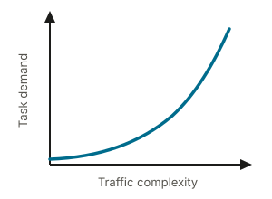
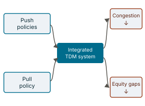
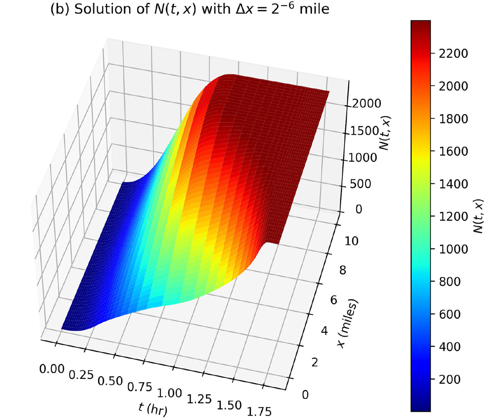
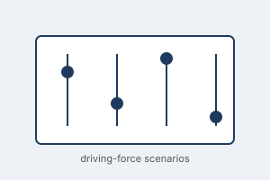
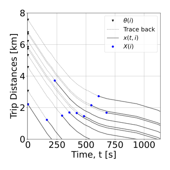
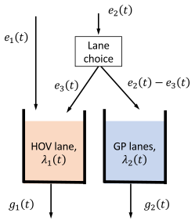
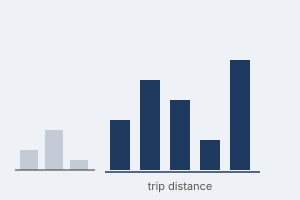
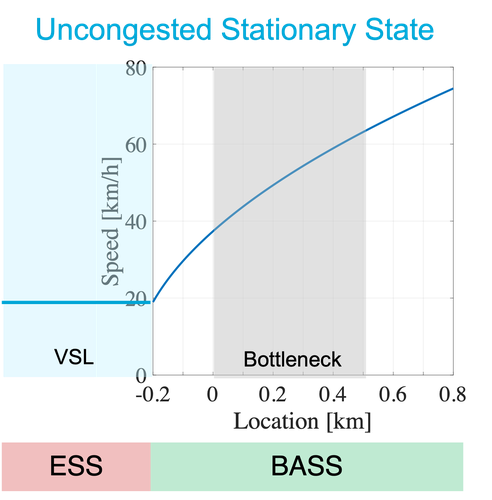
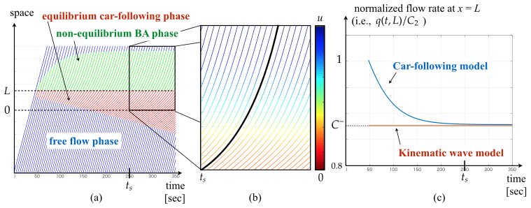
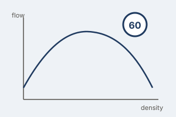

My work develops holistic, efficient, multi-modal transport models — spanning traffic flow theory, managed lanes, shared mobility, and connected/automated vehicles — with efficiency and equity as guiding lenses.
Projects

UrbanMOVES
Addressing the urgent need for efficient tools to assess the impact of Shared Urban Mobility Systems (SUMS) — such as ride-pooling and vehicle-sharing — on congested urban transportation networks.
i4Driving
Laying the foundation for a new industry-standard methodology to establish a credible and realistic human road safety baseline for virtual assessment of Connected, Cooperative and Automated Mobility (CCAM) systems.
DeepTraffic
Traffic managers keep the network flowing by combining experience, insight, and a wealth of sensor data — but a local disruption (an accident, roadworks, extreme weather) can spread across the network like an oil slick, and predicting how is extremely hard, especially for rare events with little historical data. DeepTraffic develops a new generation of traffic-prediction methods that embed traffic flow theory directly into machine learning, using Physics-Informed Neural Networks (PINNs) that stay reliable when data is scarce and remain transparent enough for traffic managers to trust and act on.
Journal Publications

J12 Under review An Empirical Model of Driver Workload Dynamics at Unsignalized Intersections
Develops an empirical model linking driver mental workload to traffic conditions at unsignalised intersections, using driving-simulator data, and integrates it into microscopic traffic simulation to support the safety assessment of Automated Driving Systems in mixed traffic.
doi.org/10.2139/ssrn.6850163 (SSRN preprint)

J11 Under review Can traffic congestion be managed without compromising social equity?
Uses System Dynamics and Causal Loop Diagrams, validated through a Delphi study with experts across six Western European countries, to show that combining push and pull travel-demand-management policies can reduce traffic congestion while easing its social equity externalities.
doi.org/10.2139/ssrn.6463879 (SSRN preprint)

J10 Monotone three-dimensional surfaces and equivalent formulations of the generalized bathtub model
Establishes monotonicity conditions on the three-dimensional surfaces underlying the generalized bathtub model and shows several equivalent ways to formulate it.

J9 Scenarios of automated driving based on a switchboard for driving forces — an application to the Netherlands
Introduces a “switchboard” of key uncertain driving forces (automation levels, acceptance, policy) to build a structured set of plausible automated-driving scenarios for the Netherlands, supporting long-term mobility policy planning.

J8 Priority Queue Formulation of Agent-Based Bathtub Model for Network Trip Flows in the Relative Space
Reformulates the network-level “bathtub” accumulation model as a priority queue, where trips are served according to remaining distance — an efficient, agent-based way to capture heterogeneous trip lengths in network-wide traffic dynamics.

J7 Dynamic distance-based pricing scheme for high-occupancy-toll lanes along a freeway corridor
Derives a bathtub-model-based dynamic toll that varies continuously with distance and time along a freeway corridor, so the price a driver pays matches the actual congestion relief the managed lane delivers.
J6 Compartmental model and fleet-size management for shared mobility systems with for-hire vehicles
Develops a compartmental model for fleets of for-hire vehicles, linking fleet size directly to service levels and vehicle utilisation in shared mobility systems.

J5 On time-dependent trip distance distribution with for-hire vehicle trips in Chicago
Uses empirical TNC trip data from Chicago to characterise how the distribution of trip distances evolves over the day, informing more realistic demand inputs for network-level traffic models.

J4 Optimal location problem for variable speed limit application areas
Derives the optimal placement of Variable Speed Limit zones upstream of bottlenecks (sags, tunnels) to mitigate capacity drop, balancing zone length against added travel time.

J3 Continuum car-following model of capacity drop at sag and tunnel bottlenecks
Extends a continuum (LWR-type) car-following formulation to reproduce capacity drop at sag and tunnel bottlenecks, connecting microscopic driving behaviour to macroscopic flow breakdown.

J2 Effects of low speed limits on freeway traffic flow
Empirically evaluates how low variable speed limits affect the flow–density relationship and bottleneck capacity on freeways, using real traffic data.
J1 New data on traffic in highways with variable speed limits [Original title in Spanish]
Presents new empirical traffic datasets collected on Spanish highways under variable speed limit operation. This is the foundational work for J2.
Dissemination at Conferences
Peer-reviewed conference papers and proceedings, grouped by event. Supervised MSc students and PhD candidates are marked with an asterisk (*). Workshops and other activities that I (co-)organised are under Scientific Events & Workshops > Organisation.
2026 (4 papers)
14th Symposium of the European Association for Research in Transportation — hEART
C26 Detecting Structural Changes in Urban Road Network Performance: A Kernel-Based Hierarchical Change Point Detection Framework
C25 Seamless borders? The transfer effect of cross-border travel in Europe
C24 On Capturing Region-specific Effects of Traffic-state-dependent Trip Distances in Multi-region Bathtub Models
7th Symposium on Management of Future Motorway and Urban Traffic Systems
C23 Quantifying Driver Workload at Unsignalized Intersections Based on Traffic Context: Insights for Driver Models
There is a journal publication associated with this work — check it here: doi.org/10.2139/ssrn.6850163 (J12, currently under review)
2025 (1 paper)
Transportation Research Board (TRB) 104th Annual Meeting
C22 Impact of Trip Distance Distribution Time Dependency and Aggregation Levels in Bathtub Models — A Comparative Simulation Analysis
2024 (3 papers)
Transportation Research Board (TRB) Symposium on Managed Lanes
C21 Dynamic Distance-based Pricing for High Occupancy Toll Lanes: A Generalized Bathtub Model Approach
International Symposium on Transportation and Traffic Theory (ISTTT)
C20 Priority Queue Formulation of Agent-Based Bathtub Model for Network Trip Flows in the Relative Space
There is a journal publication associated with this work — check it here: doi.org/10.1016/j.trc.2024.104765 (J8)
12th Symposium of the European Association for Research in Transportation — hEART
C19 From Network Topology to Traffic: An Investigation of the Relationship Between Network Topological Features and Traffic Data
2023 (3 papers)
IEEE Intelligent Transportation Systems Conference (ITSC)
C18 Mitigation of stop-and-go traffic waves with intelligent vehicles at low market penetration rates
Published proceedings: doi.org/10.1109/ITSC57777.2023.10422070
TFTC Summer Meeting
C17 Reduction of Capacity Drop at Sag and Tunnel Bottlenecks through Connected Vehicles
Transportation Research Board (TRB) 102nd Annual Meeting
C16 On Down-Scaling of the Agent-Based Bathtub Model with Generic Demand Patterns
There is a journal publication associated with this work — check it here: doi.org/10.1016/j.trc.2024.104765 (J8)
2022 (2 papers)
Transportation Research Board (TRB) 101st Annual Meeting
C15 Stationary States and Capacity Drop at Lane-Drop Bottlenecks with the Intelligent Driver Model
International Symposium on Transportation and Traffic Theory (ISTTT)
C14 Compartmental model and fleet-size management for shared mobility systems with for-hire vehicles
There is a journal publication associated with this work — check it here: doi.org/10.1016/j.trc.2021.103236 (J6)
2021 (3 papers)
International Symposium on Transportation Data and Modelling (ISTDM)
C13 Trip Length Distribution of TNC Trips: Based on Empirical Data in Chicago
There is a journal publication associated with this work — check it here: doi.org/10.1177/03611981211021552 (J5)
Transportation Research Board (TRB) 100th Annual Meeting
C12 Calibration of time-dependent trip distance distribution with for-hire vehicle trips in Chicago
There is a journal publication associated with this work — check it here: doi.org/10.1177/03611981211021552 (J5)
C11 Dynamic pricing for high occupancy toll lanes along a freeway corridor based on bathtub model
There is a journal publication associated with this work — check it here: doi.org/10.1109/TITS.2024.3416845 (J7)
2020 (2 papers)
Transportation Research Board (TRB) Workshop on Traffic Simulation and Connected and Autonomous Vehicle Modeling
C10 Efficient agent-based model for trip flow analysis at the network level
Transportation Research Board (TRB) 99th Annual Meeting
C9 Improving urban multi-modal transport system through congestion pricing and bus fleet sizing: Bi-modal network fundamental diagram modeling approach
2019 (4 papers)
Euro Working Group on Transportation (EWGT)
C8 Stochastic LWR model with heterogeneous vehicles: Theory and application for autonomous vehicles
Published in Transportation Research Procedia — check it here: doi.org/10.1016/j.trpro.2020.03.088
International Symposium on Transportation and Traffic Theory (ISTTT)
C7 Continuum car-following model of capacity drop at sag and tunnel bottlenecks
There is a journal publication associated with this work — check it here: doi.org/10.1016/j.trc.2019.05.012 (J3)
Transportation Research Board (TRB) 98th Annual Meeting
C6 A stochastic LWR model with heterogeneous time gaps: Theory, Applications and Simulations
C5 The LWR model with a stochastic speed-density relation
2018 (2 papers)
International Symposium of Transport Simulation
C4 Impact of VSL location on capacity drop: A case of sag and tunnel bottleneck
Published in Transportation Research Procedia — check it here: doi.org/10.1016/j.trpro.2018.11.008. There is also a related journal publication: doi.org/10.1016/j.trb.2020.05.003 (J4)
Transportation Research Board (TRB) 97th Annual Meeting
C3 Optimal location of variable speed limit application areas
There is a journal publication associated with this work — check it here: doi.org/10.1016/j.trb.2020.05.003 (J4)
2016 (1 paper)
1st Symposium on Management of Future Motorway and Urban Traffic Systems (MFTS)
C2 Effects of low speed limits on motorway traffic: Some empirical findings
There is a journal publication associated with this work — check it here: doi.org/10.1016/j.trc.2017.01.024 (J2)
2015 (1 paper)
Transportation Research Board (TRB) 94th Annual Meeting
C1 Experimenting with dynamic speed limits on freeways